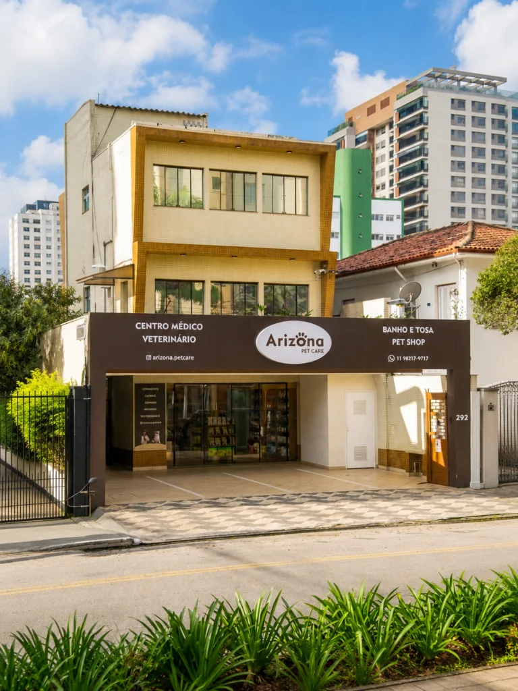

Exames Laboratoriais
Hemograma, bioquímicos e citologia.
AgendarClínica Veterinária · Vila Clementino — SP
Cuidado completo para a saúde e o bem-estar do seu pet, perto de você.
Visite-nos: Av. Dr. Altino Arantes, 292 — Vila Clementino, São Paulo/SP Ver no Maps

Avaliações no Google
Avaliações públicas do perfil da clínica no Google. Ver todas no Maps
A clínica
Na Arizona Pet Care, o bem-estar e a saúde do seu pet estão sempre em primeiro lugar. Contamos com uma equipe preparada para oferecer diagnósticos precisos, tratamentos eficientes e atendimento cuidadoso, sempre respeitando as necessidades de cada animal.
Reunimos diversas especialidades da medicina veterinária em um só lugar, com mais praticidade, segurança e tranquilidade para você e seu pet — em um ambiente acolhedor, com profissionais de confiança.
Especialidades
Diagnósticos precisos e tratamentos adequados para cada necessidade do seu pet.
Avaliação e tratamento especializado do coração do pet.
Cuidado preciso para a saúde da pele e da pelagem.
Soluções para problemas ortopédicos.
Avaliação e cuidado para a saúde ocular dos pets.
Especialidade no cuidado de tumores.
Anestesia segura e monitorada para procedimentos precisos.
Gestão hormonal e metabólica para o bem-estar animal.
Diagnóstico e tratamento de condições neurológicas.
Diagnóstico, tratamento e prevenção de doenças causadas por vírus.
Cuida dos rins e do sistema urinário.
Cuida da saúde da boca, dentes e gengivas.
Especialidade do sistema digestivo.
Abordagem que pode complementar a medicina veterinária convencional.
Atendimento especializado para gatos.
Focada na nutrição e nas necessidades nutricionais do animal.
Aves, coelhos, roedores, répteis e outros animais silvestres ou exóticos.
Nosso espaço
Estrutura organizada, ambiente acolhedor e equipamentos adequados para um cuidado veterinário de qualidade.
Horário de atendimento
Agende já sua consulta: seu pet merece o melhor cuidado, perto de você!
(11) 98217-9717